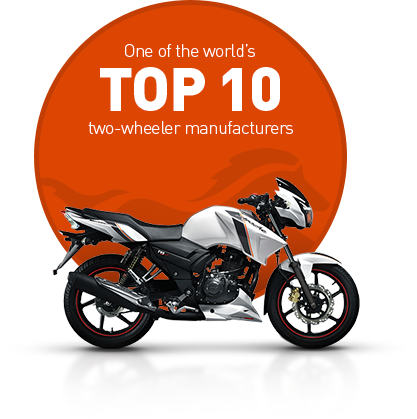

TVS Motor Company
is the third largest two-wheeler manufacturer in India and one among the top ten in the world exporting to over 52 countries, with annual turnover of more than USD 1 Billion. It is also the flagship company of the USD 4 Billion TVS group. It’s got a penchant for quality. The company has 4 plants located at Hosur and Mysore in South India, one at Himachal Pradesh and another one in Indonesia.

-
USD 1 Bil
Annual Turnover
-
4 plants
Across India and Indonesia
-
300k/yr
Production Capacity